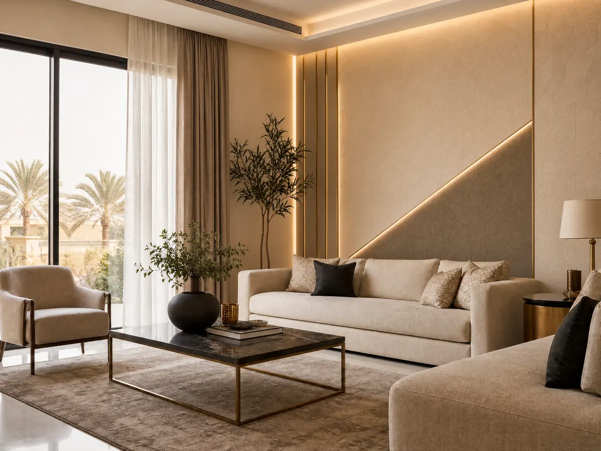

لمسات مميزة لاختيار معلم دهانات جوتن لمنزلك 053 116 9312
معلم دهانات جوتن هو ما يبحث عنه كثيرون عند التخطيط لتجديد منازلهم واختيار ألوان تمنح الجدران مظهر أنيق ومريح، لكن جمال النتيجة لا يعتمد على درجة اللون وحدها، بل على توافقها مع الإضاءة والأثاث والأرضيات وطبيعة كل غرفة، فإذا كنت تريد منزل يعكس ذوقك ويمنحك شعورًا بالتجديد، فمن المهم أن تختار الألوان بعناية وأن تفكر في شكل المساحة بالكامل قبل البدء في التنفيذ، حتى لا تكتشف بعد الانتهاء أن اللون الذي أعجبك لا يناسب المكان كما توقعت.
وتوفر جوتن مجموعة واسعة من الألوان الداخلية التي تساعدك على استكشاف أفكار متنوعة، بداية من الدرجات المحايدة الهادئة وصولًا إلى الألوان الأكثر جرأة، كما يمكنك الاستفادة من خدمات ديكورات الأحلام في تنسيق عناصر الديكور الداخلي، لتقترب من الشكل الذي تتمناه، وتتعرف على الخيارات المناسبة لمساحتك من خلال التواصل مع الشركة ومناقشة تفاصيل مشروعك.
معلم دهانات جوتن
اختيار معلم دهانات جوتن واللون المناسب ليس مجرد خطوة شكلية، بل قرار يؤثر في إحساسك بالغرفة وتناسق تفاصيلها، ولذلك قبل الاتفاق على أعمال الطلاء أو اختيار عناصر الديكور، حدد النتيجة التي تريد الوصول إليها، ثم قارن الخيارات المتاحة بعناية:
- حدد طبيعة الغرفة: اختر ألوانًا تتناسب مع استخدام المساحة، فغرف النوم قد تحتاج إلى درجات هادئة، بينما تسمح بعض مساحات المعيشة باستخدام ألوان أكثر تميزًا.
- راجع الإضاءة: يمكن للإضاءة الطبيعية والصناعية أن تغير مظهر اللون، لذلك لا تعتمد على صورة اللون وحدها عند الاختيار.
- نسق اللون مع الأثاث: انظر إلى ألوان الكنب والستائر والأرضيات قبل اعتماد درجة جديدة، حتى لا تبدو العناصر منفصلة عن بعضها.
- حدد التشطيب المناسب: يختلف المظهر النهائي باختلاف نوع الدهان ودرجة اللمعان، لذا اسأل عن الخيارات المناسبة لطبيعة الجدران واستخدام الغرفة.
- اطلب تفاصيل واضحة قبل التنفيذ: اتفق على نطاق العمل والخامات والتكلفة والمدة المتوقعة، حتى تكون لديك صورة واضحة قبل اتخاذ القرار.
- فكر في الديكور المحيط: قد تحتاج المساحة إلى ورق جدران أو تكسيات أو تفاصيل إضافية بدلًا من الاعتماد على الطلاء وحده.
تعرف على: معلم جبس جنوب الرياض: اتصل 0531169312 لأفضل التصاميم العصرية
ألوان دهانات جوتن
يمنحك معلم دهانات جوتن مجموعة الألوان الداخلية من جوتن ومساحة واسعة للاختيار بين الدرجات الفاتحة والمحايدة والألوان المستوحاة من الطبيعة، والهدف هو الوصول إلى لون ينسجم مع أجواء منزلك بدلًا من اختيار درجة جميلة بمفردها لا تتوافق مع بقية العناصر:
- الأبيض ودرجاته: يناسب من يفضلون مظهرًا بسيطًا ومشرقًا، ويمكن تنسيقه مع الأثاث الخشبي أو الألوان الهادئة.
- البيج والبني: يمنحان المساحة طابعًا دافئًا، ويمكن استخدامهما مع الخشب والأرضيات ذات الدرجات الطبيعية.
- الرمادي: يناسب التصاميم العصرية، ويمكن دمجه مع الأبيض أو بعض اللمسات الخشبية للحصول على توازن بصري.
- الأخضر الهادئ: قد يكون مناسبًا لمن يريد إضافة إحساس مستوحى من الطبيعة، خاصة عند تنسيقه مع درجات محايدة.
- الأزرق: يمكن أن يضيف إحساسًا بالانتعاش، مع أهمية اختيار الدرجة التي تناسب الإضاءة ومساحة الغرفة.
- الألوان المميزة: يمكن تخصيص جدار واحد بدرجة مختلفة لإبراز جزء من المكان، بدلًا من توزيع الألوان القوية على جميع الجدران.
شاهد الآن: معلم جبس بورد شمال الرياض: 0531169312 أحدث التصميمات العصرية
دهانات جوتن داخلي
عند اختيار الفني المختص داخلي من المهم أن تنظر إلى طبيعة استخدام الغرفة وسهولة العناية بالجدران والمظهر الذي تريده، فالمساحة العائلية تختلف عن غرفة النوم أو الممر واختيار المنتج والتشطيب المناسبين يساعدك على اتخاذ قرار أكثر وعيًا:
- غرف المعيشة: اختر درجة تتناغم مع الأثاث وتسمح بإضافة تفاصيل لونية من خلال الوسائد والستائر والإكسسوارات.
- غرف النوم: فكر في الألوان التي تمنحك إحساسًا بالراحة، مثل بعض درجات البيج والأبيض المائل للدفء.
- الممرات: انتبه إلى الإضاءة والمساحة، ويمكن للألوان الفاتحة أن تساعد على إبراز الممر بصورة أكثر انفتاحًا.
- المطابخ: راعِ سهولة العناية بالأسطح وطبيعة الاستخدام اليومي عند مناقشة نوع الدهان المناسب.
- الغرف متعددة الاستخدام: اختر درجات مرنة تتوافق مع الأثاث الحالي، خاصة إذا كنت لا تخطط لتغييره بالكامل.
دهان كاجو من جوتن
إذا كنت تميل إلى الألوان الهادئة التي تمنح المنزل إحساس بالدفء دون الابتعاد عن الطابع العصري عليك اختيار أفضل الفني المختص، فقد يستحق لون كاشو من جوتن التجربة، ويُكتب اسمه في كتالوج جوتن بالإنجليزية Cashew ويحمل رقم 1931، وتصفه الشركة بأنه درجة بيج هادئة، ما يجعله خيارًا يستحق الدراسة عند تنسيق المساحات الداخلية:
- في غرف المعيشة: يمكن دراسة استخدام كاشو مع الأثاث الأبيض أو الخشبي للحصول على مظهر متوازن.
- في غرف النوم: قد يناسب من يفضلون أجواء هادئة، خاصة عند تنسيقه مع أقمشة وأغطية بدرجات محايدة.
- مع الأرضيات: قارن الدرجة مع لون السيراميك أو الباركيه، لأن اختلاف الألوان بين الجدران والأرضيات قد يغير الإحساس العام بالمكان.
- مع الإضاءة الدافئة: اختبر اللون تحت الإضاءة التي تستخدمها عادة، لأن شكل البيج قد يتغير بحسب نوع الإضاءة وشدتها.
- مع الألوان المساندة: يمكن الاستلهام من الألوان التي توصي بها جوتن مع كاشو، ثم تجربة التناسق بينها قبل اعتماد المجموعة النهائية.
اقرأ أيضًا:شركة تركيب جبس بورد بالرياض: احصل على تصميم عصري 0531169312
كيف تجعل ألوان الجدران جزءًا من ديكور متكامل؟
قد يكون اللون الذي اخترته مناسبًا، لكن النتيجة النهائية تصبح أكثر انسجامًا عندما تتعامل مع الجدران والأسقف والأرضيات باعتبارها أجزاء من تصميم واحد، ولذلك من المفيد التفكير في العناصر التي يمكن أن تكمل اللون بدلًا من اتخاذ كل قرار بمعزل عن الآخر:
- الجبس بورد: يمكن أن يضيف معلم دهانات جوتن تفاصيل إلى الأسقف والجدران، خاصة عندما يكون التصميم متوافقًا مع مساحة الغرفة والإضاءة.
- بديل الرخام: خيار ديكوري يمكن دراسته لإضافة مظهر مختلف لبعض الجدران والمساحات الداخلية.
- ورق الجدران: يساعد على إدخال نقوش أو خامات بصرية مميزة دون الحاجة إلى استخدام اللون نفسه على جميع الجدران.
- التكسيات الخشبية: تضيف دفئًا بصريًا ويمكن تنسيقها مع الدرجات المحايدة والبيج.
- الباركيه: يساعد اختيار لونه بعناية على ربط الأثاث والجدران والأرضيات في صورة واحدة.
- الشيبورد: يمكن الاستفسار عن استخدامه ضمن حلول الديكور المناسبة للمساحة والتصميم المطلوب.
الخاتمة
اختيار الفني المختص يبدأ من تحديد الألوان التي تناسب منزلك وفهم تأثير الإضاءة والأثاث والتشطيبات على النتيجة النهائية، وإذا كنت تفكر في درجة كاشو أو غيرها من الألوان الداخلية، فامنح نفسك فرصة لمعاينة العينات ومقارنة الخيارات قبل اعتماد اللون، لأن القرار المدروس يساعدك على تجنب تغييرات غير ضرورية ويمنحك تصورًا أوضح لشكل المكان بعد التجديد.
ولا تجعل مشروعك يقتصر على اختيار لون جميل فقط، بل فكّر في التفاصيل التي تكمل المساحة وتمنحها مظهر متناسق.
الأسئلة الشائعة
1. كيف أختار معلم دهانات جوتن المناسب لمنزلي؟
حدد أولًا المساحة المطلوب طلاؤها والألوان التي تفضلها ونوع التشطيب الذي تحتاج إليه، ثم استفسر عن الخامات وتجهيز الجدران والتكلفة والمدة المتوقعة، ومن المهم أيضًا معاينة اللون في الإضاءة الفعلية وعدم الاعتماد على الصور فقط، مع التأكد من أن مقدم الخدمة ينفذ نوع الدهانات الذي تبحث عنه.
2. ما لون كاشو من جوتن، وهل يناسب الديكور الداخلي؟
كاشو 1931 هو لون بيج هادئ ضمن ألوان جوتن الداخلية، ويمكن دراسة تنسيقه مع الأثاث الخشبي والألوان المحايدة بحسب طبيعة الغرفة والإضاءة، لكن الأفضل معاينة عينة فعلية قبل اعتماده لأن اللون قد يظهر بشكل مختلف من مكان إلى آخر، ويمكن مراجعة صفحة اللون الرسمية للاطلاع على مجموعات الألوان المقترحة معه.
3. هل تقدم ديكورات الأحلام خدمات دهانات جوتن؟
يعرض موقع ديكورات الأحلام خدمات الديكور الداخلي، ومنها الجبس بورد وبديل الرخام وورق الجدران والباركيه والتكسيات الخشبية والشيبورد، لكنه لا يدرج الدهانات كخدمة مستقلة ضمن الخدمات المنشورة، لذلك يمكنك التواصل مع الشركة على الرقم 0531169312 أو عبر الموقع الإلكتروني للاستفسار عن توافر خدمة الطلاء ومعرفة حلول الديكور المناسبة لمشروعك.
هل تبحث عن تنفيذ احترافي لمشروعك؟
نحن في ديكورات الأحلام نوفر لك أفضل الخامات وأمهر الفنيين في الرياض.
تواصل معنا عبر واتساب